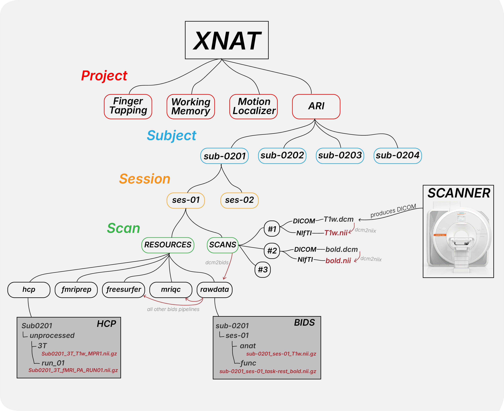

Understanding Data Structure
This section explains the different MRI data formats used in research and how they relate to each other. Understanding these formats will greatly help you working with XNAT, so we start here.
MRI data follows a specific conversion pathway that determines which analysis pipelines you can use:
DICOM Files NIfTI Files Organized Data
(Raw Scanner) → (Analysis Ready) → (Pipeline Ready)
│ │ │
• Multiple files • Single file/volume ├─ BIDS Format
• Rich metadata • Simplified header │ └─ fMRIPrep, QSIPrep
• Patient info • Standard orientation │ MRIQC, TractoFlow
• Complex structure • Analysis tool support │
└─ HCP Format
└─ HCP Pipeline
How does this work with XNAT?
{kind=link}
The scanner sends DICOMs to XNAT, which is stores under the corresponding Project, Subject, and Session.
Under Session, there is a SCANS folder which contains every single scans sent from the scanner.
Within each individual scan folder, you can convert the DICOM files to NIfTI files using the dcm2niix pipeline.
Note that there is also a RESOURCE folder under Session which contains the output of various pipelines such as the BIDS rawdata or fmriprep output.
This RESOURCE folder is available for every level of the hierarchy, meaning that under Subject and Project you will also find a RESOURCE folder.
You can also read more about this here.
The Project level RESOURCE folder contains files that are shared across all subjects in the project. For example, we store the dcm2bids configuration file here, which is used to run the dcm2bids pipeline.
dcm2niix pipeline is a scan level pipeline while dcm2bids is a session level pipeline.
dcm2bids takes all the data under SCANS within a session and converts them to the the BIDS format (which is a standard way to structrure neuroimaging data). The output is stored in the session level RESOURCE folder called rawdata.
This rawdata folder is then used as input for many other BIDS compliant pipelines such as the MRIQC and fMRIPrep.
Format Overview
DICOM (Digital Imaging and Communications in Medicine)
Raw data straight from the MRI scanner
Contains rich metadata and multiple files per scan
Industry standard but complex to work with
Must be converted for analysis
NIfTI (Neuroimaging Informatics Technology Initiative)
Simplified MRI data format
Single file per volume with header information
Widely supported by analysis tools
Intermediate format for further organization
BIDS (Brain Imaging Data Structure)
Standardized way to organize MRI data
Includes consistent naming conventions and metadata
Required for many neuroimaging pipelines such as fMRIPrep, QSIPrep, MRIQC, TractoFlow, etc.
HCP (Human Connectome Project)
A special format used by HCP pipelines
Choosing Your Workflow
Common Workflows:
Standard Analysis: DICOM → BIDS → fMRIPrep → Analysis
Quality Control: DICOM → BIDS → MRIQC → Review
Connectome Analysis: DICOM → HCP input → HCP Pipeline → Analysis
Tractography: DICOM → BIDS → TractoFlow → Analysis
Next Steps
Learn about BIDS Format